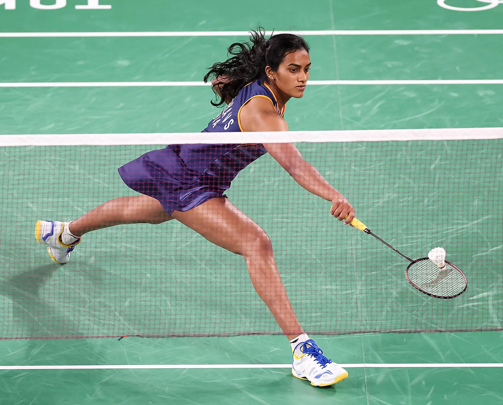

Absolute path
Indoor Games:
Indoor games are fun activities that you play inside your house. People of
all ages like indoor games. They are a good way to take a break from your
work being outside. These games have puzzles and challenges that make you
think. You can play them with your friends or family or children. Indoor
games have something for everyone, whether you want to compete or relax.
Some of the examples of Indoor Games
-
Chess :
Chess is a board game
for two players. It is sometimes called international chess or Western
chess to distinguish it from related games such as xiangqi (Chinese
chess) and shogi (Japanese chess). Chess is an abstract strategy game
that involves no hidden information and no elements of chance. It is
played on a chessboard with 64 squares arranged in an 8×8 grid. The
players, referred to as "White" and "Black", each control sixteen
pieces: one king, one queen, two rooks, two bishops, two knights, and
eight pawns. White moves first, followed by Black. The game is won by
checkmating the opponent's king, i.e. threatening it with inescapable
capture. There are several ways a game can end in a draw.

-
Scavenger hunt : A
scavenger hunt
is a game in which the organizers prepare a list defining specific
items, which the participants seek to gather or complete all items on
the list, usually without purchasing them. Usually participants work in
small teams, although the rules may allow individuals to participate.
The goal is to be the first to complete the list or to complete the most
items on that list. In variations of the game, players take photographs
of listed items or be challenged to complete the tasks on the list in
the most creative manner. A treasure hunt is another name for the game,
but it may involve following a series of clues to find objects or a
single prize in a particular order.

-
Card game : A
Card game is any
game that uses playing cards as the primary device with which the game
is played, whether the cards are of a traditional design or specifically
created for the game (proprietary). Countless card games exist,
including families of related games (such as poker). A small number of
card games played with traditional decks have formally standardized
rules with international tournaments being held, but most are folk games
whose rules may vary by region, culture, location or from circle to
circle.

-
Carrom :
Carrom is a tabletop
game of Indian origin in which players flick discs, attempting to knock
them to the corners of the board. In South Asia, many clubs and cafés
hold regular tournaments. Carrom is commonly played by families,
including children, and at social functions. Different standards and
rules exist in different areas.

-
Chardes : Charades is a parlor or party word guessing game.
Originally, the game was a dramatic form of literary charades: a single
person would act out each syllable of a word or phrase in order,
followed by the whole phrase together, while the rest of the group
guessed. A variant was to have teams who acted scenes out together while
the others guessed. Today, it is common to require the actors to mime
their hints without using any spoken words, which requires some
conventional gestures. Puns and visual puns were and remain common.

Relative path
Out door Games:
Sports or athletic games typically performed in the open, including
physical exertion, are referred to as outdoor games. All across the world,
people enjoy playing outdoor games and sports since they are fun and
beneficial for physical fitness. But these outdoor games for kids no
longer hold as much significance in light of the rising popularity of
video games, online games, and gaming devices.
Some of the Examples of Outdoor games
-
Hockey :
Hockey is a term used
to denote a family of various types of both summer and winter team
sports which originated on either an outdoor field, sheet of ice, or dry
floor such as in a gymnasium. While these sports vary in specific rules,
numbers of players, apparel, and playing surface, they share broad
characteristics of two opposing teams using a stick to propel a ball or
disk into a goal. There are many types of hockey i.e. field hockey, ice
hockey, roller hockey, rink hockey, or floor hockey.

-
Badminton :
Badminton is a
racquet sport played using racquets to hit a shuttlecock across a net.
Although it may be played with larger teams, the most common forms of
the game are "singles" (with one player per side) and "doubles" (with
two players per side). Badminton is often played as a casual outdoor
activity in a yard or on a beach; formal games are played on a
rectangular indoor court. Points are scored by striking the shuttlecock
with the racquet and landing it within the other team's half of the
court.

-
Basketball :
Basketball is a
team sport in which two teams, most commonly of five players each,
opposing one another on a rectangular court, compete with the primary
objective of shooting a basketball (approximately 9.4 inches (24 cm) in
diameter) through the defender's hoop (a basket 18 inches (46 cm) in
diameter mounted 10 feet (3.048 m) high to a backboard at each end of
the court), while preventing the opposing team from shooting through
their own hoop. A field goal is worth two points, unless made from
behind the three-point line, when it is worth three. After a foul, timed
play stops and the player fouled or designated to shoot a technical foul
is given one, two or three one-point free throws. The team with the most
points at the end of the game wins, but if regulation play expires with
the score tied, an additional period of play (overtime) is mandated.
-
Kabaddi :
Kabaddi is a contact
team sport played between two teams of seven players, originating in
ancient India. The objective of the game is for a single player on
offence, referred to as a "raider", to run into the opposing team's half
of the court, touch out as many of their players as possible, and return
to their own half of the court, all without being tackled by the
defenders in 30 seconds. Points are scored for each player tagged by the
raider, while the opposing team earns a point for stopping the raider.
Players are taken out of the game if they are touched or tackled, but
return to the game after each point scored by their team from a tag or
tackle.

-
Fotball or Soccer :
Association football, more commonly known as football or soccer,[a] is a team sport played
between two teams of 11 players each, who primarily use their feet to
propel a ball around a rectangular field called a pitch. The objective
of the game is to score more goals than the opposing team by moving the
ball beyond the goal line into a rectangular-framed goal defended by the
opposing team. Traditionally, the game has been played over two
45-minute halves, for a total match time of 90 minutes. With an
estimated 250 million players active in over 200 countries and
territories, it is the world's most popular sport.